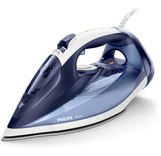
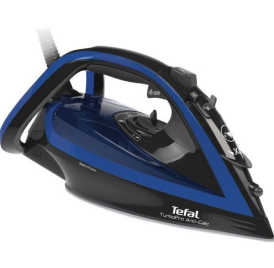
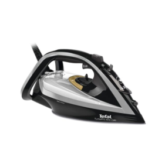
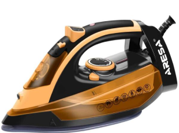
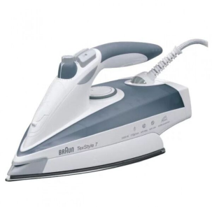

ТОП 5 хороших недорогих утюгов
Основные характеристики Максимальная мощность: 2500 ВтРабочая поверхность: SteamGlide PlusЕмкость резервуара для воды: 300 млМощность подачи пара: 50 г/минПаровой удар: ДаИнтенсивность парового удара: 220 г/мин
Утюг Tefal FV5688E0 в Минске скидка только по выходным 231 бел. руб
Утюг Philips GC4556/20 в Минске 5 звёзд и скидка 221 бел. руб
Основные характеристики Максимальная мощность: 2800 ВтРабочая поверхность: Durilium AirGlide AutocleanЕмкость резервуара для воды: 300 млМощность подачи пара: 50 г/минПаровой удар: ДаИнтенсивность парового удара: 220 г/мин
Утюг Tefal FV5699E0 в Минске 5 звёзд и скидка аж до 260 бел. руб
Основные характеристики Максимальная мощность: 3000 ВтРабочая поверхность: Durilium AirGlide AutocleanМощность подачи пара: 50 г/минПаровой удар: ДаИнтенсивность парового удара: 270 г/минВертикальное отпаривание: Да
Утюг Aresa AR-3121 в Минске за маленькую сумму в эту пятницу скидка аж до 75 бел. руб
Основные характеристики Максимальная мощность: 2400 ВтРабочая поверхность: КерамикаЕмкость резервуара для воды: 250 млМощность подачи пара: 45 г/минПаровой удар: ДаИнтенсивность парового удара: 140 г/мин а подробнее по кнопке купить
горячая скидка только сегодня забирай хороший утюг за 197 бел. руб
Основные характеристики Максимальная мощность: 2400 ВтРабочая поверхность: Алюминий, ТефлонЕмкость резервуара для воды: 400 млМощность подачи пара: 50 г/минПаровой удар: ДаИнтенсивность парового удара: 200 г/мин, а подробнее по кнопке купить